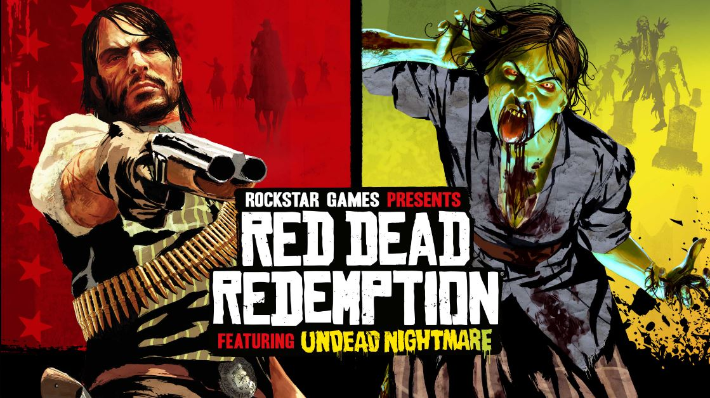

Pre-Purchase Red Dead Redemption and Undead Nightmare on PC at the Rockstar Store
Red Dead Redemption and Undead Nightmare are now available to pre-purchase on PC via the Rockstar Store.
To celebrate its upcoming PC release on October 29, we’ve brought back a pair of classic items from the original Red Dead Redemption Frontier Collection. Red Dead Redemption Playing Cards and Liar’s Dice are now available at the Rockstar Store alongside the latest releases, Rockstar Gear, and much more.
Red Dead Redemption and Undead Nightmare are also available to pre-purchase on Steam and the Epic Games Store — and currently available on Nintendo Switch, PlayStation 4, and Xbox.